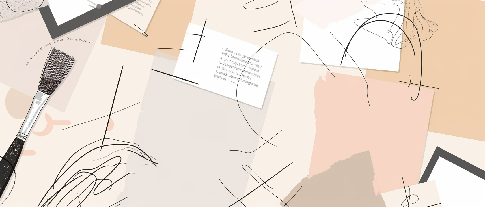

Essays on exhibitions, institutions, and the art world as a system — how artworks circulate, acquire value, and shape ways of seeing.
All essays are written from a reporting perspective, based on field research and institutional observation.
